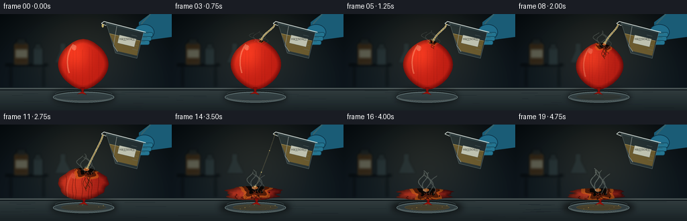
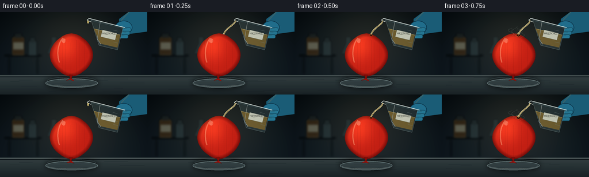

CODING AGENTS AS PIXEL WORLD MODELS
traex/GPT-5.6-Sol · material_0040
点击播放 · 原生 RGB 像素
逐轮保存的候选
回放视频、检查图与代码变化。
每份候选均可单独播放。实际图片检查记录在下方工具轨迹中。
候选 01播放与检查图
点击播放 · 原生 RGB 像素


展开代码变化
--- 上一保存版本
+++ 本次保存版本
@@ -0,0 +1,351 @@
+from pathlib import Path
+import math
+import numpy as np
+from PIL import Image, ImageDraw, ImageFont, ImageFilter
+import cv2
+import artifact_io
+
+# Deterministic procedural text-to-video rendering.
+ROOT = Path(__file__).resolve().parent
+W, H, N, FPS = 256, 144, 20, 4.0
+S = 4
+w, h = W*S, H*S
+rng = np.random.default_rng(70421)
+
+try:
+ FONT = ImageFont.truetype('/usr/share/fonts/truetype/dejavu/DejaVuSans.ttf', 6*S)
+ FONT_SM = ImageFont.truetype('/usr/share/fonts/truetype/dejavu/DejaVuSans.ttf', 4*S)
+except Exception:
+ FONT = FONT_SM = ImageFont.load_default()
+
+def sc(v): return int(round(v*S))
+def pts(seq): return [(sc(x), sc(y)) for x, y in seq]
+def smoothstep(x):
+ x = max(0.0, min(1.0, x)); return x*x*(3-2*x)
+
+def rgba_layer(): return Image.new('RGBA', (w,h), (0,0,0,0))
+
+def draw_glow(base, xy, radius, color, alpha=120):
+ lay = rgba_layer(); d = ImageDraw.Draw(lay)
+ x,y = xy
+ d.ellipse((sc(x-radius),sc(y-radius),sc(x+radius),sc(y+radius)), fill=(*color,alpha))
+ lay = lay.filter(ImageFilter.GaussianBlur(sc(radius*.72)))
+ return Image.alpha_composite(base, lay)
+
+def cubic(p0,p1,p2,p3,n=24):
+ out=[]
+ for t in np.linspace(0,1,n):
+ a=(1-t)**3; b=3*(1-t)**2*t; c=3*(1-t)*t*t; d=t**3
+ out.append((a*p0[0]+b*p1[0]+c*p2[0]+d*p3[0], a*p0[1]+b*p1[1]+c*p2[1]+d*p3[1]))
+ return out
+
+def background(frame_idx):
+ yy,xx=np.mgrid[0:h,0:w]
+ # Cool, low-key laboratory wall with a warm practical-light pool.
+ wall_y=np.clip(yy/(114*S),0,1)
+ arr=np.empty((h,w,3),dtype=np.float32)
+ arr[...,0]=12+10*wall_y
+ arr[...,1]=20+13*wall_y
+ arr[...,2]=25+16*wall_y
+ lamp=np.exp(-(((xx-128*S)/(94*S))**2+((yy-45*S)/(82*S))**2))
+ arr += lamp[...,None]*np.array([24,20,12])
+ vign=1-0.32*np.clip(((xx-w/2)/(w*.64))**2+((yy-h/2)/(h*.82))**2,0,1)
+ arr*=vign[...,None]
+ arr=np.clip(arr,0,255).astype(np.uint8)
+ im=Image.fromarray(arr,'RGB').convert('RGBA')
+
+ # Defocused background bottles and wall seams.
+ bg=rgba_layer(); d=ImageDraw.Draw(bg)
+ d.line(pts([(0,35),(256,35)]), fill=(92,107,110,28), width=sc(.45))
+ d.line(pts([(0,81),(256,81)]), fill=(95,110,113,24), width=sc(.45))
+ d.line(pts([(72,0),(72,108)]), fill=(75,91,96,20), width=sc(.45))
+ d.line(pts([(184,0),(184,108)]), fill=(75,91,96,20), width=sc(.45))
+ # Shelf
+ d.rounded_rectangle((sc(8),sc(74),sc(72),sc(78)),radius=sc(1),fill=(4,8,10,130))
+ d.rectangle((sc(14),sc(78),sc(18),sc(108)),fill=(5,9,11,80))
+ d.rectangle((sc(63),sc(78),sc(67),sc(108)),fill=(5,9,11,80))
+ # amber reagent bottle
+ d.rounded_rectangle((sc(20),sc(43),sc(43),sc(75)),radius=sc(4),fill=(93,57,17,100),outline=(163,111,45,65),width=sc(1))
+ d.rectangle((sc(25),sc(37),sc(38),sc(45)),fill=(37,41,38,130))
+ d.rectangle((sc(23),sc(53),sc(41),sc(65)),fill=(216,204,161,90))
+ # pale bottle and flask silhouette
+ d.rounded_rectangle((sc(49),sc(50),sc(64),sc(75)),radius=sc(3),fill=(71,93,95,75))
+ d.rectangle((sc(52),sc(44),sc(61),sc(53)),fill=(50,66,67,80))
+ d.polygon(pts([(81,73),(89,54),(89,43),(98,43),(98,54),(108,73)]),fill=(81,108,113,45),outline=(139,168,171,35))
+ bg=bg.filter(ImageFilter.GaussianBlur(sc(1.8)))
+ im=Image.alpha_composite(im,bg)
+
+ # Stainless work surface.
+ bench=rgba_layer(); d=ImageDraw.Draw(bench)
+ d.rectangle((0,sc(110),w,h),fill=(38,49,52,255))
+ for y0 in range(sc(110),h):
+ t=(y0/S-110)/34
+ col=(int(55-25*t),int(66-27*t),int(68-26*t),255)
+ d.line([(0,y0),(w,y0)],fill=col)
+ d.line(pts([(0,111),(256,111)]),fill=(166,174,167,120),width=sc(1))
+ d.line(pts([(0,113),(256,113)]),fill=(4,9,11,170),width=sc(1))
+ # subdued horizontal brushed-metal lines
+ for j in range(15):
+ y0=114+rng.random()*29
+ x0=rng.random()*210
+ ln=8+rng.random()*38
+ d.line(pts([(x0,y0),(min(255,x0+ln),y0)]),fill=(150,160,158,int(7+rng.random()*10)),width=max(1,sc(.2)))
+ im=Image.alpha_composite(im,bench)
+ return im
+
+def balloon_geometry(fi):
+ # Gradual attack then fast deflation and a final flattened rubber remnant.
+ q=smoothstep((fi-3)/13)
+ rupture=smoothstep((fi-8)/7)
+ ytop=37 + 16*q + 42*rupture
+ ybot=112.5
+ maxwid=37.5*(1-.18*q)+10*rupture
+ cx=124 + 1.8*math.sin(fi*.28) - 2.0*rupture
+ right=[]; left=[]
+ for i,t in enumerate(np.linspace(0,1,75)):
+ # broad balloon shoulders; near the end, a low wrinkled sheet
+ expo=.57-0.25*rupture
+ width=maxwid*(max(0,math.sin(math.pi*t))**expo)
+ width*=1 + rupture*(.10*math.sin(t*12+fi*.3)+.05*math.sin(t*27))
+ cy=ytop+(ybot-ytop)*t
+ bend=(2.0*math.sin(t*math.pi*1.15+.4)-1.1*t)*q
+ wrinkle=rupture*(1.6*math.sin(t*24+fi*.21)+.75*math.sin(t*51))
+ right.append((cx+bend+width+wrinkle,cy))
+ left.append((cx+bend-width+wrinkle*.45,cy))
+ poly=right+left[::-1]
+ return poly,(cx,ytop,ybot,maxwid,q,rupture)
+
+def balloon_layer(fi):
+ poly, geom=balloon_geometry(fi)
+ cx,ytop,ybot,maxwid,q,rupture=geom
+ mask=Image.new('L',(w,h),0); md=ImageDraw.Draw(mask); md.polygon(pts(poly),fill=255)
+ m=np.asarray(mask,dtype=np.float32)/255
+ yy,xx=np.mgrid[0:h,0:w]; X=xx/S; Y=yy/S
+ # Dimensional rubber shading: lit from upper-left, deep edge falloff.
+ dist=cv2.distanceTransform(np.asarray(mask),cv2.DIST_L2,5)/S
+ edge=np.clip(dist/7.0,0,1)
+ base=np.zeros((h,w,4),dtype=np.uint8)
+ light=np.exp(-(((X-(cx-13))/(24+12*rupture))**2+((Y-(ytop+20))/(30))**2))
+ lower=np.clip((Y-ytop)/(max(1,ybot-ytop)),0,1)
+ # Red latex loses saturation and blackens over time.
+ R=115+74*edge+52*light-37*q-28*rupture
+ G=18+17*edge+27*light-5*q
+ B=15+10*edge+12*light
+ grain=(np.sin(X*1.17+Y*.31)+np.sin(Y*1.73-X*.18))*1.6*(.3+q)
+ R+=grain; G+=grain*.35
+ base[...,0]=np.clip(R,0,255); base[...,1]=np.clip(G,0,255); base[...,2]=np.clip(B,0,255); base[...,3]=(m*255).astype(np.uint8)
+ lay=Image.fromarray(base,'RGBA')
+
+ details=rgba_layer(); d=ImageDraw.Draw(details)
+ # Glossy latex reflections, fading as surface is chemically damaged.
+ gloss=max(0,1-q*.9)
+ if gloss>0:
+ curve=cubic((cx-15,ytop+8),(cx-27,ytop+24),(cx-24,ytop+42),(cx-21,ytop+51),30)
+ d.line(pts(curve),fill=(255,190,149,int(100*gloss)),width=sc(2.0))
+ d.ellipse((sc(cx-17),sc(ytop+9),sc(cx-10),sc(ytop+17)),fill=(255,225,195,int(75*gloss)))
+ # Latex tension lines and then pronounced collapse folds.
+ fold_alpha=int(35+145*rupture)
+ for k in range(7):
+ x0=cx-25+k*8 + math.sin(k*2.1)*2
+ y0=ytop+12+(k%2)*4
+ path=[]
+ for u in np.linspace(0,1,22):
+ path.append((x0+math.sin(u*8+k)*1.6*rupture,
+ y0+u*(ybot-y0-2)))
+ d.line(pts(path),fill=(48,8,8,fold_alpha),width=sc(.55+1.0*rupture))
+ if rupture>.25:
+ d.line(pts([(x+1.0,y) for x,y in path]),fill=(225,89,57,int(45*rupture)),width=sc(.45))
+ details.putalpha(Image.composite(details.getchannel('A'),Image.new('L',(w,h),0),mask))
+ lay=Image.alpha_composite(lay,details)
+
+ # Tie/neck, increasingly limp but still recognizable as balloon rubber.
+ tie=rgba_layer(); d=ImageDraw.Draw(tie)
+ nx=cx-1+rupture*7; ny=ybot-1
+ d.polygon(pts([(nx-3,ny-2),(nx+3,ny-2),(nx+1,ny+5),(nx-1,ny+5)]),fill=(130,19,15,255),outline=(67,8,8,220))
+ d.polygon(pts([(nx-1,ny+4),(nx-8,ny+8),(nx-1,ny+7),(nx+6,ny+9),(nx+1,ny+4)]),fill=(151,24,17,255),outline=(64,8,8,210))
+ return Image.alpha_composite(lay,tie), mask, geom
+
+def corrosion_layer(fi,mask,geom):
+ cx,ytop,ybot,maxwid,q,rupture=geom
+ progress=max(0,(fi-1)/17)
+ lay=rgba_layer(); d=ImageDraw.Draw(lay)
+ if progress<=0: return lay
+ # Contact follows the receding crown. Multi-lobed scorched aperture and amber chemical rim.
+ contact_x=cx+8-4*rupture
+ contact_y=ytop+3.5
+ rad=1.8+16*smoothstep(progress*1.35)
+ # irregular outer acid-burn halo
+ for band,(mul,col) in enumerate([(1.35,(207,113,26,120)),(1.05,(74,31,12,220)),(.70,(15,12,10,255))]):
+ r=rad*mul
+ pp=[]
+ for a in np.linspace(0,2*math.pi,58,endpoint=False):
+ rr=r*(1+.18*math.sin(5*a+fi*.23)+.09*math.sin(9*a+1.1))
+ pp.append((contact_x+rr*math.cos(a),contact_y+rr*.62*math.sin(a)))
+ d.polygon(pts(pp),fill=col)
+ # freshly wet specular center
+ d.ellipse((sc(contact_x-rad*.33),sc(contact_y-rad*.18),sc(contact_x+rad*.18),sc(contact_y+rad*.08)),fill=(239,175,65,100))
+ # Acid tracks / blackened branching rivulets.
+ tracks=min(5,max(0,fi-3))
+ for k in range(tracks):
+ x0=contact_x-rad*.25+k*rad*.14
+ length=min(ybot-contact_y-4,(fi-2-k*.6)*3.15)
+ path=[]
+ for u in np.linspace(0,1,28):
+ path.append((x0+math.sin(u*8+k*1.7)*(1.1+u*1.4), contact_y+rad*.2+u*max(0,length)))
+ d.line(pts(path),fill=(39,18,10,185),width=sc(.8+(.35 if k==2 else 0)))
+ d.line(pts([(x+.5,y) for x,y in path]),fill=(218,126,40,75),width=sc(.35))
+ # scorched pinholes around main burn
+ for k in range(min(15,max(0,fi-4))):
+ a=k*2.399+fi*.07; rr=rad*(.65+.8*((k*17)%11)/11)
+ x=contact_x+math.cos(a)*rr; y=contact_y+math.sin(a)*rr*.7
+ r=.45+(k%3)*.25
+ d.ellipse((sc(x-r),sc(y-r),sc(x+r),sc(y+r)),fill=(18,11,8,190))
+ # Clip all chemistry to balloon silhouette.
+ alpha=np.minimum(np.asarray(lay.getchannel('A')),np.asarray(mask)).astype(np.uint8)
+ lay.putalpha(Image.fromarray(alpha,'L'))
+ return lay
+
+def dish_and_shadow(fi):
+ lay=rgba_layer(); d=ImageDraw.Draw(lay)
+ rupture=smoothstep((fi-8)/7)
+ # soft balloon/dish shadow
+ sh=rgba_layer(); sd=ImageDraw.Draw(sh)
+ sd.ellipse((sc(78-8*rupture),sc(112),sc(171+7*rupture),sc(134)),fill=(0,0,0,145))
+ sh=sh.filter(ImageFilter.GaussianBlur(sc(4.5)))
+ lay=Image.alpha_composite(lay,sh); d=ImageDraw.Draw(lay)
+ # shallow clear glass safety dish beneath the balloon
+ d.ellipse((sc(79),sc(116),sc(170),sc(132)),fill=(111,139,143,28),outline=(184,211,211,115),width=sc(1.1))
+ d.arc((sc(82),sc(119),sc(167),sc(130)),0,180,fill=(231,240,231,95),width=sc(.7))
+ d.arc((sc(82),sc(113),sc(167),sc(126)),180,360,fill=(82,107,111,85),width=sc(.7))
+ # collected acid with yellow edge, more visible late
+ if fi>7:
+ a=min(80,10+(fi-7)*7)
+ d.ellipse((sc(91),sc(119),sc(158),sc(128)),fill=(138,93,25,a),outline=(222,162,45,a),width=sc(.6))
+ return lay
+
+def hand_and_beaker(fi):
+ # Whole assembly subtly tips as acid is poured.
+ lay=rgba_layer(); d=ImageDraw.Draw(lay)
+ # blue nitrile-gloved hand and forearm entering upper right
+ d.polygon(pts([(256,0),(223,0),(207,12),(207,30),(226,38),(256,34)]),fill=(31,94,119,255))
+ d.line(pts([(224,0),(211,14),(210,29)]),fill=(90,160,174,145),width=sc(2))
+ d.ellipse((sc(200),sc(15),sc(230),sc(39)),fill=(37,110,139,255),outline=(17,60,82,230),width=sc(1))
+ # gripping fingers laid over far side of glass
+ for k,(x,y,ang) in enumerate([(204,27,0),(202,33,0),(199,39,0)]):
+ d.rounded_rectangle((sc(x),sc(y),sc(x+24),sc(y+7)),radius=sc(3),fill=(42,122,150,245),outline=(19,70,91,220),width=sc(.7))
+ d.line(pts([(x+3,y+1),(x+17,y+2)]),fill=(102,174,184,95),width=sc(.65))
+
+ # Glass beaker tipped toward the balloon, outlined in multiple reflections.
+ body=[(158,13),(214,27),(204,66),(172,58)]
+ d.polygon(pts(body),fill=(154,202,208,30),outline=(207,235,233,185))
+ # acid fill inside vessel: warm, translucent, and sloped with gravity
+ acid=[(163,29),(209,40),(204,62),(174,55)]
+ d.polygon(pts(acid),fill=(207,163,67,112))
+ d.line(pts([(163,29),(209,40)]),fill=(255,226,136,170),width=sc(.85))
+ # open rim / pouring lip
+ d.line(pts([(155,11),(217,27)]),fill=(235,249,246,220),width=sc(1.15))
+ d.line(pts([(156,14),(216,29)]),fill=(104,158,168,150),width=sc(.55))
+ d.line(pts([(155,11),(151,14),(158,17)]),fill=(235,247,241,210),width=sc(1.0))
+ # glass glints and scale marks
+ d.line(pts([(174,18),(169,47),(175,56)]),fill=(245,255,248,125),width=sc(.8))
+ for k in range(4):
+ d.line(pts([(196+k*.3,31+k*7),(204+k*.3,33+k*7)]),fill=(222,242,238,110),width=sc(.45))
+ # white chemical label on beaker
+ label=[(178,31),(203,37),(200,49),(175,43)]
+ d.polygon(pts(label),fill=(220,224,205,210),outline=(101,111,100,180))
+ txt=Image.new('RGBA',(w,h),(0,0,0,0)); td=ImageDraw.Draw(txt)
+ td.text((sc(178.5),sc(35)),"H2SO4",font=FONT_SM,fill=(38,40,34,235),stroke_width=0)
+ txt=txt.rotate(-346,center=(sc(189),sc(40)),resample=Image.Resampling.BICUBIC)
+ # Above rotate isn't ideal for exact label angle; retain only masked local-looking text.
+ # Use simple unrotated small marking to maximize legibility at output resolution.
+ d.text((sc(178),sc(35)),"HâSOâ",font=FONT_SM,fill=(40,43,36,235))
+ return lay
+
+def stream_and_drops(fi, geom):
+ cx,ytop,ybot,maxwid,q,rupture=geom
+ lay=rgba_layer(); d=ImageDraw.Draw(lay)
+ # first frame has a forming droplet; sustained pour; taper toward the end
+ if fi==0:
+ d.ellipse((sc(151.5),sc(14.5),sc(154.5),sc(20)),fill=(241,211,117,190),outline=(255,247,199,190))
+ return lay
+ if fi<=14:
+ strength=1.0 if fi<11 else max(.20,(15-fi)/4)
+ target=(cx+8-4*rupture,ytop+2)
+ path=cubic((153,15),(153,22),(target[0]+4,target[1]-12),target,45)
+ # luminous edge and transparent amber core
+ d.line(pts(path),fill=(255,245,189,int(190*strength)),width=sc(2.0*strength+.6))
+ d.line(pts(path),fill=(192,142,44,int(170*strength)),width=sc(.8*strength+.3))
+ d.line(pts([(x-.45,y) for x,y in path]),fill=(255,255,230,int(165*strength)),width=sc(.35))
+ # tumbling beads alongside main stream
+ for k in range(3):
+ t=((fi*.17+k*.31)%1)
+ p=path[int(t*(len(path)-1))]
+ r=.55+.25*(k%2)
+ d.ellipse((sc(p[0]-r),sc(p[1]-r),sc(p[0]+r),sc(p[1]+r)),fill=(250,224,136,180))
+ # tiny splash crown at impact
+ if fi>2:
+ for k in range(5):
+ a=-2.8+k*.38
+ length=2+(k%2)*1.4
+ x2=target[0]+math.cos(a)*length; y2=target[1]+math.sin(a)*length
+ d.line(pts([target,(x2,y2)]),fill=(255,227,143,170),width=sc(.45))
+ d.ellipse((sc(x2-.4),sc(y2-.4),sc(x2+.4),sc(y2+.4)),fill=(249,229,156,160))
+ return lay
+
+def vapor(fi,geom):
+ lay=rgba_layer()
+ if fi<3:return lay
+ cx,ytop,ybot,maxwid,q,rupture=geom
+ progress=(fi-2)/17
+ # Wispy pale acid mist, restrained and semi-transparent.
+ crisp=rgba_layer(); d=ImageDraw.Draw(crisp)
+ for k in range(5):
+ startx=cx+5+(k-2)*4
+ starty=ytop+4+min(8,k*1.3)
+ rise=12+19*progress+(k%2)*4
+ curve=[]
+ for u in np.linspace(0,1,34):
+ x=startx+math.sin(u*6.5+k*1.2+fi*.11)*(2.2+4*u)+u*(k-2)*1.5
+ y=starty-u*rise
+ curve.append((x,y))
+ d.line(pts(curve),fill=(209,222,207,int((30+55*progress)*(1-k*.08))),width=sc(.7+progress*.6))
+ blur=crisp.filter(ImageFilter.GaussianBlur(sc(1.4+progress)))
+ return Image.alpha_composite(blur,crisp)
+
+def render(fi):
+ im=background(fi)
+ # dish sits behind the balloon but its near rim will remain readable
+ im=Image.alpha_composite(im,dish_and_shadow(fi))
+ balloon,mask,geom=balloon_layer(fi)
+ im=Image.alpha_composite(im,balloon)
+ im=Image.alpha_composite(im,corrosion_layer(fi,mask,geom))
+ # beaker and hand sit above/behind their falling stream
+ im=Image.alpha_composite(im,hand_and_beaker(fi))
+ im=Image.alpha_composite(im,stream_and_drops(fi,geom))
+ im=Image.alpha_composite(im,vapor(fi,geom))
+ # Sparse droplets on dish/bench after reaction.
+ if fi>7:
+ sp=rgba_layer(); d=ImageDraw.Draw(sp)
+ for k in range(min(8,fi-6)):
+ x=92+((k*31)%69); y=119+((k*17)%8)
+ r=.35+(k%3)*.22
+ d.ellipse((sc(x-r),sc(y-r),sc(x+r),sc(y+r*.55)),fill=(227,176,76,105))
+ im=Image.alpha_composite(im,sp)
+ # Final optical treatment: downsample for antialiasing and subtle cinematic contrast.
+ im=im.convert('RGB').resize((W,H),Image.Resampling.LANCZOS)
+ a=np.asarray(im,dtype=np.float32)
+ a=(a-128)*1.05+128
+ # very slight warm highlight / cool shadow split
+ lum=a.mean(axis=2,keepdims=True)
+ hi=np.clip((lum-100)/155,0,1)
+ a[...,0]+=hi[...,0]*3; a[...,2]-=hi[...,0]*2
+ return np.clip(a,0,255).astype(np.uint8)
+
+def main():
+ frames=np.stack([render(i) for i in range(N)],axis=0)
+ assert frames.shape==(N,H,W,3) and frames.dtype==np.uint8
+ artifact_io.save(frames,ROOT)
+ print(f'saved {N} RGB frames: {frames.shape}, {FPS:g} fps, {N/FPS:g}s')
+
+if __name__=='__main__':
+ main()
可观测工具轨迹
实际执行的命令与返回图片。
命令 1exit 0
/bin/bash -lc "cat prompt.txt && printf '\\n--- GENERATION_RULES ---\\n' && cat GENERATION_RULES.md"
命令 2exit 0
/bin/bash -lc "cat task_spec.json && printf '\\n--- FILES ---\\n' && find . -maxdepth 2 -type f -printf '%p\\n' | sort"
命令 3exit 0
/bin/bash -lc "command -v ffmpeg; command -v python3; python3 - <<'PY' mods=['PIL','numpy','cv2','imageio','scipy'] for m in mods: try: x=__import__(m); print(m, 'OK', getattr(x,'__version__','')) except Exception as e: print(m,'NO',e) PY"
命令 4exit 0
/bin/bash -lc "sed -n '1,260p' artifact_io.py"
命令 5exit 0
/bin/bash -lc "sed -n '1,220p' player_template.html"
命令 6exit 0
/bin/bash -lc "cat > generate.py <<'PY'
from pathlib import Path
import math
import numpy as np
from PIL import Image, ImageDraw, ImageFont, ImageFilter
import cv2
import artifact_io
# Deterministic procedural text-to-video rendering.
ROOT = Path(__file__).resolve().parent
W, H, N, FPS = 256, 144, 20, 4.0
S = 4
w, h = W*S, H*S
rng = np.random.default_rng(70421)
try:
FONT = ImageFont.truetype('/usr/share/fonts/truetype/dejavu/DejaVuSans.ttf', 6*S)
FONT_SM = ImageFont.truetype('/usr/share/fonts/truetype/dejavu/DejaVuSans.ttf', 4*S)
except Exception:
FONT = FONT_SM = ImageFont.load_default()
def sc(v): return int(round(v*S))
def pts(seq): return [(sc(x), sc(y)) for x, y in seq]
def smoothstep(x):
x = max(0.0, min(1.0, x)); return x*x*(3-2*x)
def rgba_layer(): return Image.new('RGBA', (w,h), (0,0,0,0))
def draw_glow(base, xy, radius, color, alpha=120):
lay = rgba_layer(); d = ImageDraw.Draw(lay)
x,y = xy
d.ellipse((sc(x-radius),sc(y-radius),sc(x+radius),sc(y+radius)), fill=(*color,alpha))
lay = lay.filter(ImageFilter.GaussianBlur(sc(radius*.72)))
return Image.alpha_composite(base, lay)
def cubic(p0,p1,p2,p3,n=24):
out=[]
for t in np.linspace(0,1,n):
a=(1-t)**3; b=3*(1-t)**2*t; c=3*(1-t)*t*t; d=t**3
out.append((a*p0[0]+b*p1[0]+c*p2[0]+d*p3[0], a*p0[1]+b*p1[1]+c*p2[1]+d*p3[1]))
return out
def background(frame_idx):
yy,xx=np.mgrid[0:h,0:w]
# Cool, low-key laboratory wall with a warm practical-light pool.
wall_y=np.clip(yy/(114*S),0,1)
arr=np.empty((h,w,3),dtype=np.float32)
arr[...,0]=12+10*wall_y
arr[...,1]=20+13*wall_y
arr[...,2]=25+16*wall_y
lamp=np.exp(-(((xx-128*S)/(94*S))**2+((yy-45*S)/(82*S))**2))
arr += lamp[...,None]*np.array([24,20,12])
vign=1-0.32*np.clip(((xx-w/2)/(w*.64))**2+((yy-h/2)/(h*.82))**2,0,1)
arr*=vign[...,None]
arr=np.clip(arr,0,255).astype(np.uint8)
im=Image.fromarray(arr,'RGB').convert('RGBA')
# Defocused background bottles and wall seams.
bg=rgba_layer(); d=ImageDraw.Draw(bg)
d.line(pts([(0,35),(256,35)]), fill=(92,107,110,28), width=sc(.45))
d.line(pts([(0,81),(256,81)]), fill=(95,110,113,24), width=sc(.45))
d.line(pts([(72,0),(72,108)]), fill=(75,91,96,20), width=sc(.45))
d.line(pts([(184,0),(184,108)]), fill=(75,91,96,20), width=sc(.45))
# Shelf
d.rounded_rectangle((sc(8),sc(74),sc(72),sc(78)),radius=sc(1),fill=(4,8,10,130))
d.rectangle((sc(14),sc(78),sc(18),sc(108)),fill=(5,9,11,80))
d.rectangle((sc(63),sc(78),sc(67),sc(108)),fill=(5,9,11,80))
# amber reagent bottle
d.rounded_rectangle((sc(20),sc(43),sc(43),sc(75)),radius=sc(4),fill=(93,57,17,100),outline=(163,111,45,65),width=sc(1))
d.rectangle((sc(25),sc(37),sc(38),sc(45)),fill=(37,41,38,130))
d.rectangle((sc(23),sc(53),sc(41),sc(65)),fill=(216,204,161,90))
# pale bottle and flask silhouette
d.rounded_rectangle((sc(49),sc(50),sc(64),sc(75)),radius=sc(3),fill=(71,93,95,75))
d.rectangle((sc(52),sc(44),sc(61),sc(53)),fill=(50,66,67,80))
d.polygon(pts([(81,73),(89,54),(89,43),(98,43),(98,54),(108,73)]),fill=(81,108,113,45),outline=(139,168,171,35))
bg=bg.filter(ImageFilter.GaussianBlur(sc(1.8)))
im=Image.alpha_composite(im,bg)
# Stainless work surface.
bench=rgba_layer(); d=ImageDraw.Draw(bench)
d.rectangle((0,sc(110),w,h),fill=(38,49,52,255))
for y0 in range(sc(110),h):
t=(y0/S-110)/34
col=(int(55-25*t),int(66-27*t),int(68-26*t),255)
d.line([(0,y0),(w,y0)],fill=col)
d.line(pts([(0,111),(256,111)]),fill=(166,174,167,120),width=sc(1))
d.line(pts([(0,113),(256,113)]),fill=(4,9,11,170),width=sc(1))
# subdued horizontal brushed-metal lines
for j in range(15):
y0=114+rng.random()*29
x0=rng.random()*210
ln=8+rng.random()*38
d.line(pts([(x0,y0),(min(255,x0+ln),y0)]),fill=(150,160,158,int(7+rng.random()*10)),width=max(1,sc(.2)))
im=Image.alpha_composite(im,bench)
return im
def balloon_geometry(fi):
# Gradual attack then fast deflation and a final flattened rubber remnant.
q=smoothstep((fi-3)/13)
rupture=smoothstep((fi-8)/7)
ytop=37 + 16*q + 42*rupture
ybot=112.5
maxwid=37.5*(1-.18*q)+10*rupture
cx=124 + 1.8*math.sin(fi*.28) - 2.0*rupture
right=[]; left=[]
for i,t in enumerate(np.linspace(0,1,75)):
# broad balloon shoulders; near the end, a low wrinkled sheet
expo=.57-0.25*rupture
width=maxwid*(max(0,math.sin(math.pi*t))**expo)
width*=1 + rupture*(.10*math.sin(t*12+fi*.3)+.05*math.sin(t*27))
cy=ytop+(ybot-ytop)*t
bend=(2.0*math.sin(t*math.pi*1.15+.4)-1.1*t)*q
wrinkle=rupture*(1.6*math.sin(t*24+fi*.21)+.75*math.sin(t*51))
right.append((cx+bend+width+wrinkle,cy))
left.append((cx+bend-width+wrinkle*.45,cy))
poly=right+left[::-1]
return poly,(cx,ytop,ybot,maxwid,q,rupture)
def balloon_layer(fi):
poly, geom=balloon_geometry(fi)
cx,ytop,ybot,maxwid,q,rupture=geom
mask=Image.new('L',(w,h),0); md=ImageDraw.Draw(mask); md.polygon(pts(poly),fill=255)
m=np.asarray(mask,dtype=np.float32)/255
yy,xx=np.mgrid[0:h,0:w]; X=xx/S; Y=yy/S
# Dimensional rubber shading: lit from upper-left, deep edge falloff.
dist=cv2.distanceTransform(np.asarray(mask),cv2.DIST_L2,5)/S
edge=np.clip(dist/7.0,0,1)
base=np.zeros((h,w,4),dtype=np.uint8)
light=np.exp(-(((X-(cx-13))/(24+12*rupture))**2+((Y-(ytop+20))/(30))**2))
lower=np.clip((Y-ytop)/(max(1,ybot-ytop)),0,1)
# Red latex loses saturation and blackens over time.
R=115+74*edge+52*light-37*q-28*rupture
G=18+17*edge+27*light-5*q
B=15+10*edge+12*light
grain=(np.sin(X*1.17+Y*.31)+np.sin(Y*1.73-X*.18))*1.6*(.3+q)
R+=grain; G+=grain*.35
base[...,0]=np.clip(R,0,255); base[...,1]=np.clip(G,0,255); base[...,2]=np.clip(B,0,255); base[...,3]=(m*255).astype(np.uint8)
lay=Image.fromarray(base,'RGBA')
details=rgba_layer(); d=ImageDraw.Draw(details)
# Glossy latex reflections, fading as surface is chemically damaged.
gloss=max(0,1-q*.9)
if gloss>0:
curve=cubic((cx-15,ytop+8),(cx-27,ytop+24),(cx-24,ytop+42),(cx-21,ytop+51),30)
d.line(pts(curve),fill=(255,190,149,int(100*gloss)),width=sc(2.0))
d.ellipse((sc(cx-17),sc(ytop+9),sc(cx-10),sc(ytop+17)),fill=(255,225,195,int(75*gloss)))
# Latex tension lines and then pronounced collapse folds.
fold_alpha=int(35+145*rupture)
for k in range(7):
x0=cx-25+k*8 + math.sin(k*2.1)*2
y0=ytop+12+(k%2)*4
path=[]
for u in np.linspace(0,1,22):
path.append((x0+math.sin(u*8+k)*1.6*rupture,
y0+u*(ybot-y0-2)))
d.line(pts(path),fill=(48,8,8,fold_alpha),width=sc(.55+1.0*rupture))
if rupture>.25:
d.line(pts([(x+1.0,y) for x,y in path]),fill=(225,89,57,int(45*rupture)),width=sc(.45))
details.putalpha(Image.composite(details.getchannel('A'),Image.new('L',(w,h),0),mask))
lay=Image.alpha_composite(lay,details)
# Tie/neck, increasingly limp but still recognizable as balloon rubber.
tie=rgba_layer(); d=ImageDraw.Draw(tie)
nx=cx-1+rupture*7; ny=ybot-1
d.polygon(pts([(nx-3,ny-2),(nx+3,ny-2),(nx+1,ny+5),(nx-1,ny+5)]),fill=(130,19,15,255),outline=(67,8,8,220))
d.polygon(pts([(nx-1,ny+4),(nx-8,ny+8),(nx-1,ny+7),(nx+6,ny+9),(nx+1,ny+4)]),fill=(151,24,17,255),outline=(64,8,8,210))
return Image.alpha_composite(lay,tie), mask, geom
def corrosion_layer(fi,mask,geom):
cx,ytop,ybot,maxwid,q,rupture=geom
progress=max(0,(fi-1)/17)
lay=rgba_layer(); d=ImageDraw.Draw(lay)
if progress<=0: return lay
# Contact follows the receding crown. Multi-lobed scorched aperture and amber chemical rim.
contact_x=cx+8-4*rupture
contact_y=ytop+3.5
rad=1.8+16*smoothstep(progress*1.35)
# irregular outer acid-burn halo
for band,(mul,col) in enumerate([(1.35,(207,113,26,120)),(1.05,(74,31,12,220)),(.70,(15,12,10,255))]):
r=rad*mul
pp=[]
for a in np.linspace(0,2*math.pi,58,endpoint=False):
rr=r*(1+.18*math.sin(5*a+fi*.23)+.09*math.sin(9*a+1.1))
pp.append((contact_x+rr*math.cos(a),contact_y+rr*.62*math.sin(a)))
d.polygon(pts(pp),fill=col)
# freshly wet specular center
d.ellipse((sc(contact_x-rad*.33),sc(contact_y-rad*.18),sc(contact_x+rad*.18),sc(contact_y+rad*.08)),fill=(239,175,65,100))
# Acid tracks / blackened branching rivulets.
tracks=min(5,max(0,fi-3))
for k in range(tracks):
x0=contact_x-rad*.25+k*rad*.14
length=min(ybot-contact_y-4,(fi-2-k*.6)*3.15)
path=[]
for u in np.linspace(0,1,28):
path.append((x0+math.sin(u*8+k*1.7)*(1.1+u*1.4), contact_y+rad*.2+u*max(0,length)))
d.line(pts(path),fill=(39,18,10,185),width=sc(.8+(.35 if k==2 else 0)))
d.line(pts([(x+.5,y) for x,y in path]),fill=(218,126,40,75),width=sc(.35))
# scorched pinholes around main burn
for k in range(min(15,max(0,fi-4))):
a=k*2.399+fi*.07; rr=rad*(.65+.8*((k*17)%11)/11)
x=contact_x+math.cos(a)*rr; y=contact_y+math.sin(a)*rr*.7
r=.45+(k%3)*.25
d.ellipse((sc(x-r),sc(y-r),sc(x+r),sc(y+r)),fill=(18,11,8,190))
# Clip all chemistry to balloon silhouette.
alpha=np.minimum(np.asarray(lay.getchannel('A')),np.asarray(mask)).astype(np.uint8)
lay.putalpha(Image.fromarray(alpha,'L'))
return lay
def dish_and_shadow(fi):
lay=rgba_layer(); d=ImageDraw.Draw(lay)
rupture=smoothstep((fi-8)/7)
# soft balloon/dish shadow
sh=rgba_layer(); sd=ImageDraw.Draw(sh)
sd.ellipse((sc(78-8*rupture),sc(112),sc(171+7*rupture),sc(134)),fill=(0,0,0,145))
sh=sh.filter(ImageFilter.GaussianBlur(sc(4.5)))
lay=Image.alpha_composite(lay,sh); d=ImageDraw.Draw(lay)
# shallow clear glass safety dish beneath the balloon
d.ellipse((sc(79),sc(116),sc(170),sc(132)),fill=(111,139,143,28),outline=(184,211,211,115),width=sc(1.1))
d.arc((sc(82),sc(119),sc(167),sc(130)),0,180,fill=(231,240,231,95),width=sc(.7))
d.arc((sc(82),sc(113),sc(167),sc(126)),180,360,fill=(82,107,111,85),width=sc(.7))
# collected acid with yellow edge, more visible late
if fi>7:
a=min(80,10+(fi-7)*7)
d.ellipse((sc(91),sc(119),sc(158),sc(128)),fill=(138,93,25,a),outline=(222,162,45,a),width=sc(.6))
return lay
def hand_and_beaker(fi):
# Whole assembly subtly tips as acid is poured.
lay=rgba_layer(); d=ImageDraw.Draw(lay)
# blue nitrile-gloved hand and forearm entering upper right
d.polygon(pts([(256,0),(223,0),(207,12),(207,30),(226,38),(256,34)]),fill=(31,94,119,255))
d.line(pts([(224,0),(211,14),(210,29)]),fill=(90,160,174,145),width=sc(2))
d.ellipse((sc(200),sc(15),sc(230),sc(39)),fill=(37,110,139,255),outline=(17,60,82,230),width=sc(1))
# gripping fingers laid over far side of glass
for k,(x,y,ang) in enumerate([(204,27,0),(202,33,0),(199,39,0)]):
d.rounded_rectangle((sc(x),sc(y),sc(x+24),sc(y+7)),radius=sc(3),fill=(42,122,150,245),outline=(19,70,91,220),width=sc(.7))
d.line(pts([(x+3,y+1),(x+17,y+2)]),fill=(102,174,184,95),width=sc(.65))
# Glass beaker tipped toward the balloon, outlined in multiple reflections.
body=[(158,13),(214,27),(204,66),(172,58)]
d.polygon(pts(body),fill=(154,202,208,30),outline=(207,235,233,185))
# acid fill inside vessel: warm, translucent, and sloped with gravity
acid=[(163,29),(209,40),(204,62),(174,55)]
d.polygon(pts(acid),fill=(207,163,67,112))
d.line(pts([(163,29),(209,40)]),fill=(255,226,136,170),width=sc(.85))
# open rim / pouring lip
d.line(pts([(155,11),(217,27)]),fill=(235,249,246,220),width=sc(1.15))
d.line(pts([(156,14),(216,29)]),fill=(104,158,168,150),width=sc(.55))
d.line(pts([(155,11),(151,14),(158,17)]),fill=(235,247,241,210),width=sc(1.0))
# glass glints and scale marks
d.line(pts([(174,18),(169,47),(175,56)]),fill=(245,255,248,125),width=sc(.8))
for k in range(4):
d.line(pts([(196+k*.3,31+k*7),(204+k*.3,33+k*7)]),fill=(222,242,238,110),width=sc(.45))
# white chemical label on beaker
label=[(178,31),(203,37),(200,49),(175,43)]
d.polygon(pts(label),fill=(220,224,205,210),outline=(101,111,100,180))
txt=Image.new('RGBA',(w,h),(0,0,0,0)); td=ImageDraw.Draw(txt)
td.text((sc(178.5),sc(35)),\"H2SO4\",font=FONT_SM,fill=(38,40,34,235),stroke_width=0)
txt=txt.rotate(-346,center=(sc(189),sc(40)),resample=Image.Resampling.BICUBIC)
# Above rotate isn't ideal for exact label angle; retain only masked local-looking text.
# Use simple unrotated small marking to maximize legibility at output resolution.
d.text((sc(178),sc(35)),\"HâSOâ\",font=FONT_SM,fill=(40,43,36,235))
return lay
def stream_and_drops(fi, geom):
cx,ytop,ybot,maxwid,q,rupture=geom
lay=rgba_layer(); d=ImageDraw.Draw(lay)
# first frame has a forming droplet; sustained pour; taper toward the end
if fi==0:
d.ellipse((sc(151.5),sc(14.5),sc(154.5),sc(20)),fill=(241,211,117,190),outline=(255,247,199,190))
return lay
if fi<=14:
strength=1.0 if fi<11 else max(.20,(15-fi)/4)
target=(cx+8-4*rupture,ytop+2)
path=cubic((153,15),(153,22),(target[0]+4,target[1]-12),target,45)
# luminous edge and transparent amber core
d.line(pts(path),fill=(255,245,189,int(190*strength)),width=sc(2.0*strength+.6))
d.line(pts(path),fill=(192,142,44,int(170*strength)),width=sc(.8*strength+.3))
d.line(pts([(x-.45,y) for x,y in path]),fill=(255,255,230,int(165*strength)),width=sc(.35))
# tumbling beads alongside main stream
for k in range(3):
t=((fi*.17+k*.31)%1)
p=path[int(t*(len(path)-1))]
r=.55+.25*(k%2)
d.ellipse((sc(p[0]-r),sc(p[1]-r),sc(p[0]+r),sc(p[1]+r)),fill=(250,224,136,180))
# tiny splash crown at impact
if fi>2:
for k in range(5):
a=-2.8+k*.38
length=2+(k%2)*1.4
x2=target[0]+math.cos(a)*length; y2=target[1]+math.sin(a)*length
d.line(pts([target,(x2,y2)]),fill=(255,227,143,170),width=sc(.45))
d.ellipse((sc(x2-.4),sc(y2-.4),sc(x2+.4),sc(y2+.4)),fill=(249,229,156,160))
return lay
def vapor(fi,geom):
lay=rgba_layer()
if fi<3:return lay
cx,ytop,ybot,maxwid,q,rupture=geom
progress=(fi-2)/17
# Wispy pale acid mist, restrained and semi-transparent.
crisp=rgba_layer(); d=ImageDraw.Draw(crisp)
for k in range(5):
startx=cx+5+(k-2)*4
starty=ytop+4+min(8,k*1.3)
rise=12+19*progress+(k%2)*4
curve=[]
for u in np.linspace(0,1,34):
x=startx+math.sin(u*6.5+k*1.2+fi*.11)*(2.2+4*u)+u*(k-2)*1.5
y=starty-u*rise
curve.append((x,y))
d.line(pts(curve),fill=(209,222,207,int((30+55*progress)*(1-k*.08))),width=sc(.7+progress*.6))
blur=crisp.filter(ImageFilter.GaussianBlur(sc(1.4+progress)))
return Image.alpha_composite(blur,crisp)
def render(fi):
im=background(fi)
# dish sits behind the balloon but its near rim will remain readable
im=Image.alpha_composite(im,dish_and_shadow(fi))
balloon,mask,geom=balloon_layer(fi)
im=Image.alpha_composite(im,balloon)
im=Image.alpha_composite(im,corrosion_layer(fi,mask,geom))
# beaker and hand sit above/behind their falling stream
im=Image.alpha_composite(im,hand_and_beaker(fi))
im=Image.alpha_composite(im,stream_and_drops(fi,geom))
im=Image.alpha_composite(im,vapor(fi,geom))
# Sparse droplets on dish/bench after reaction.
if fi>7:
sp=rgba_layer(); d=ImageDraw.Draw(sp)
for k in range(min(8,fi-6)):
x=92+((k*31)%69); y=119+((k*17)%8)
r=.35+(k%3)*.22
d.ellipse((sc(x-r),sc(y-r),sc(x+r),sc(y+r*.55)),fill=(227,176,76,105))
im=Image.alpha_composite(im,sp)
# Final optical treatment: downsample for antialiasing and subtle cinematic contrast.
im=im.convert('RGB').resize((W,H),Image.Resampling.LANCZOS)
a=np.asarray(im,dtype=np.float32)
a=(a-128)*1.05+128
# very slight warm highlight / cool shadow split
lum=a.mean(axis=2,keepdims=True)
hi=np.clip((lum-100)/155,0,1)
a[...,0]+=hi[...,0]*3; a[...,2]-=hi[...,0]*2
return np.clip(a,0,255).astype(np.uint8)
def main():
frames=np.stack([render(i) for i in range(N)],axis=0)
assert frames.shape==(N,H,W,3) and frames.dtype==np.uint8
artifact_io.save(frames,ROOT)
print(f'saved {N} RGB frames: {frames.shape}, {FPS:g} fps, {N/FPS:g}s')
if __name__=='__main__':
main()
PY
python3 generate.py"命令 7exit 0
/bin/bash -lc 'python3 -m py_compile generate.py && test $(find frames -maxdepth 1 -name '"'*.png' | wc -l) -eq 20 && grep -q 'window.__pixelReady=true' index.html && echo 'compile/artifact checks: PASS' && sha256sum generate.py pixels.npz inspection.png index.html | sed 's# # #'"
命令 8exit 0
/bin/bash -lc "python3 - <<'PY'
import numpy as np
from PIL import Image
from pathlib import Path
p=Path('.')
z=np.load('pixels.npz')['pixels']
print('pixels:',z.shape,z.dtype,'range',int(z.min()),int(z.max()))
ims=np.stack([np.asarray(Image.open(f'frames/{i:02}.png').convert('RGB')) for i in range(20)])
print('frames:',ims.shape,ims.dtype)
print('mean RGB:',ims.mean((0,1,2)).round(2).tolist())
print('frame luma:',np.mean(ims,axis=(1,2,3)).round(1).tolist())
d=np.abs(np.diff(ims.astype(np.int16),axis=0))
print('adj mean abs diff:',d.mean((1,2,3)).round(2).tolist())
print('changed px %:',((d.max(axis=3)>3).mean((1,2))*100).round(1).tolist())
# key red-rubber proxy counts and very dark proxy counts within center reaction ROI
roi=ims[:,30:130,70:180]
red=((roi[:,:,:,0]>roi[:,:,:,1]*1.65)&(roi[:,:,:,0]>65)).sum((1,2))
dark=(roi.mean(3)<25).sum((1,2))
print('red proxy:',red.tolist())
print('dark proxy:',dark.tolist())
for f in ['generate.py','pixels.npz','inspection.png','transition_check.png','index.html']:
q=p/f; print(f,q.stat().st_size)
PY"命令 9exit 0
/bin/bash -lc "git status --short 2>/dev/null || true; find frames -maxdepth 1 -type f -name '*.png' -printf '%f %s\\n' | sort | head -3; find frames -maxdepth 1 -type f -name '*.png' -printf '%f %s\\n' | sort | tail -3"
保存候选 1 份；完成命令 9 次；可验证图片返回 0 张。原始 API 响应与完整日志保留在本地。